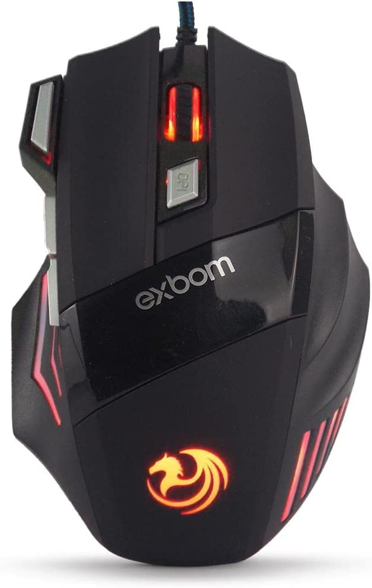
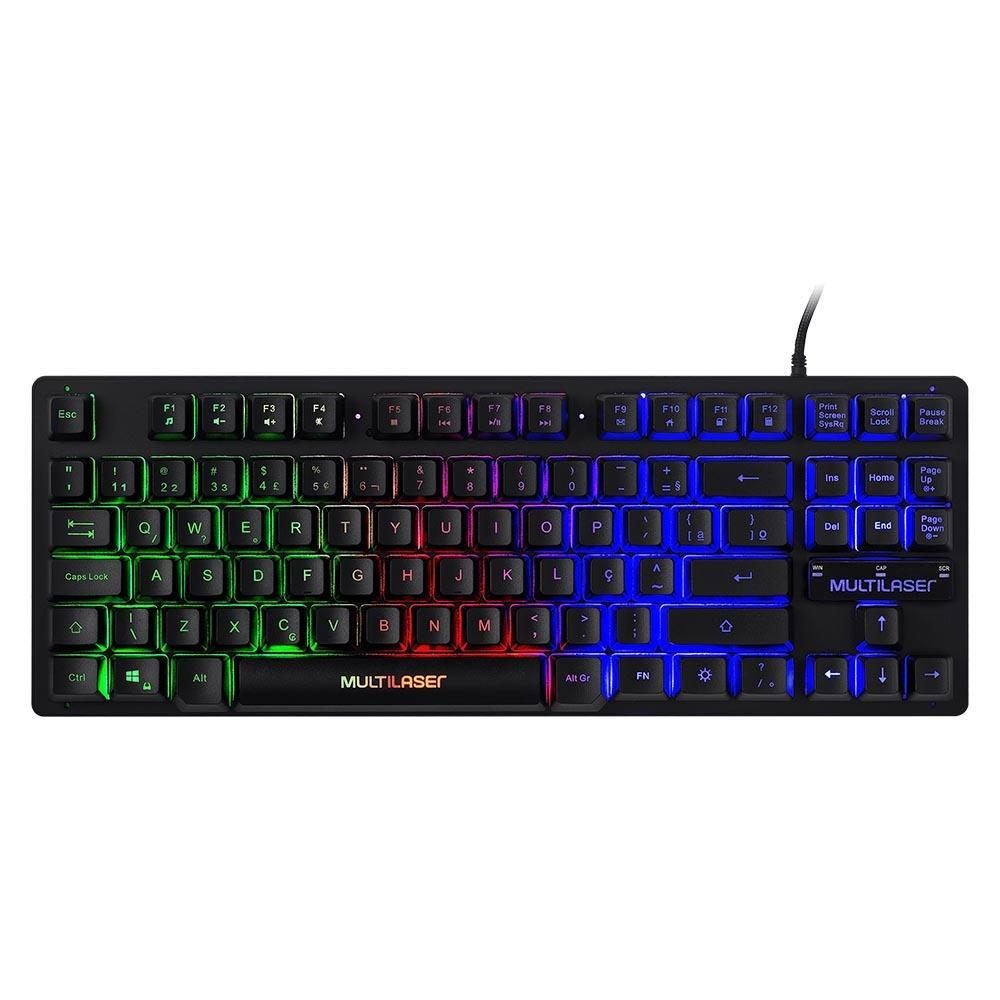
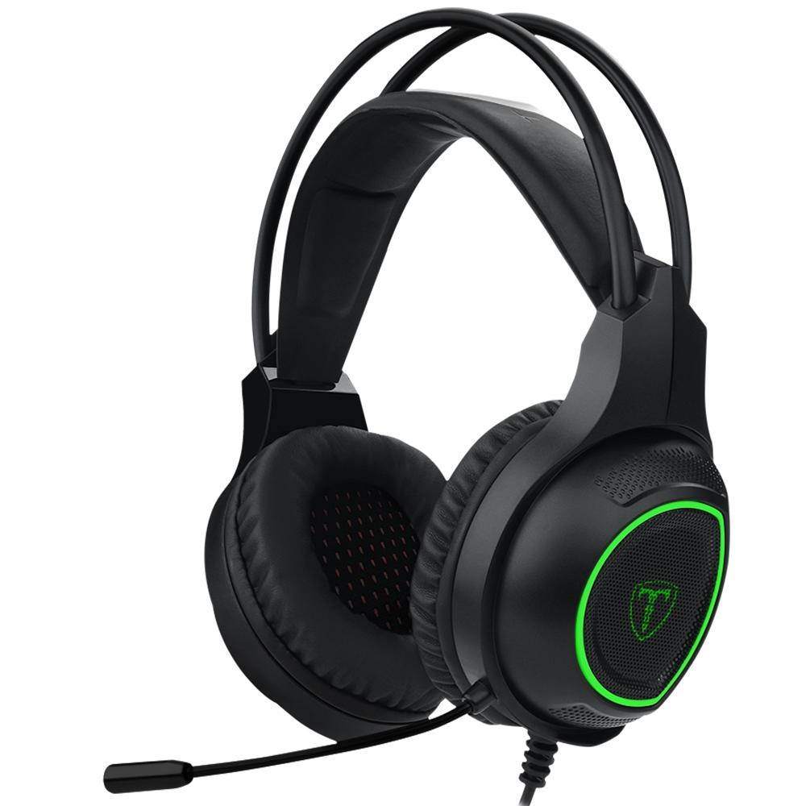

Periféricos
periférico, é um dispositivo externo auxiliar usado para enviar ou receber informações do computador ligado à CPU.
Mouse, teclado, fone de ouvido, scanner manual, monitor, alto-falante, impressora e headset são exemplos de periféricos. Os periféricos são dispositivos instalados junto ao computador, cuja a função é auxiliar na comunicação homem/máquina. Estes dispositivos poderão estar na periferia (em torno) do computador ou dentro do próprio gabinete.
Mouse gamer 3200 dpi com fio USB 7D extreme 7cores RGB xtreme 4modo DPI gaming MS-G260 x7
R$35,90
Teclado Gamer de Membrana Multi, LED Rainbow, 12 Hotkeys, Modo Game, Compacto, Preto - TC261
R$ 49,99
Headset Gamer T-Dagger Atlas, Drivers 40mm, Preto e Verde - T-RGH201
R$ 69,99